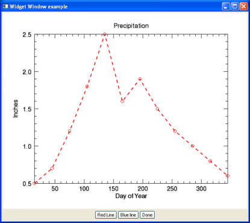

You can combine graphics within IDL widget applications by using the WIDGET_WINDOW function. Adding graphics to widget applications gives you the functionality of interactive graphic window with the ability to add your own GUI elements.

The code shown below creates the GUI (widget) application above. You can copy the entire block and paste it into the IDL editor, or enter .edit plot_widget_doc at the IDL command line to open the program.
PRO PLOT_WIDGET_DOC_EVENT, event
CASE TAG_NAMES(event, /STRUCTURE_NAME) OF
'WIDGET_BUTTON': BEGIN
WIDGET_CONTROL, event.id, GET_UVALUE = event_UV
; Retrieve the Widget Window
wDraw = WIDGET_INFO(event.top, FIND_BY_UNAME = 'DRAW')
WIDGET_CONTROL, wDraw, GET_VALUE = graphicWin
; Retrieve the plot with the NAME
; provided on plot creation
p = graphicWin['PLOT_WIDGET_DOC']
CASE event_UV OF
'DONE': WIDGET_CONTROL, event.top, /DESTROY
'RED': p.color='red'
'BLUE': p.color='blue'
ELSE: ; do nothing
ENDCASE
END
'WIDGET_BASE': begin
; Handle base resize events. Retrieve our cached padding,
; and our new size.
WIDGET_CONTROL, event.id, GET_UVALUE=pad, TLB_GET_SIZE=newSize
wDraw = WIDGET_INFO(event.top, FIND_BY_UNAME='DRAW')
; Change the draw widget to match the new size, minus padding.
xy = newSize - pad
WIDGET_CONTROL, wDraw, $
DRAW_XSIZE=xy[0], DRAW_YSIZE=xy[1], $
SCR_XSIZE=xy[0], SCR_YSIZE=xy[1]
end
ELSE: ; do nothing
ENDCASE
END
PRO PLOT_WIDGET_DOC
base1 = WIDGET_BASE(/COLUMN, TITLE='Widget Window example', $
/TLB_SIZE_EVENTS)
wDraw = WIDGET_WINDOW(base1, UVALUE='draw', UNAME='DRAW')
; Create the base for the button:
base2 = WIDGET_BASE(base1, /ROW, /ALIGN_CENTER)
; Create the action buttons.
redline = WIDGET_BUTTON(base2, VALUE='Red Line', UVALUE = 'RED')
blueline = WIDGET_BUTTON(base2, VALUE='Blue line', UVALUE='BLUE')
done = WIDGET_BUTTON(base2, VALUE = 'Done', UVALUE = 'DONE')
; Realize the widget (i.e., display it on screen).
WIDGET_CONTROL, base1, /REALIZE
; Register the widget with the XMANAGER, leaving the IDL command
; line active.
XMANAGER, 'PLOT_WIDGET_DOC', base1, /NO_BLOCK
; Cache the padding between the base and the draw
WIDGET_CONTROL, base1, TLB_GET_SIZE=basesize
xpad = basesize[0] - 640
ypad = basesize[1] - 512
WIDGET_CONTROL, base1, SET_UVALUE=[xpad,ypad]
; Retrieve the newly-created Window object.
WIDGET_CONTROL, wDraw, GET_VALUE = graphicWin
graphicWin.SELECT
PRECIP=[0.5,0.7,1.2,1.8,2.5,1.6,1.9,1.5,1.2,1.0,0.8,0.6]
TEMP=[30, 34, 38, 47, 57, 67, 73, 71, 63, 52, 39, 33]
DAY=FINDGEN(12) * 30 + 15
; Plot #1: In position #1 on the grid defined by LAYOUT
p=PLOT(DAY, PRECIP, NAME = 'PLOT_WIDGET_DOC', SYMBOL='o', $
LINESTYLE='--', TITLE = 'Precipitation', $
YTITLE = 'Inches', XTITLE= 'Day of Year', $
THICK=2, /CURRENT)
END
Note: To understand how to use the widget code to create applications, see About_Widgets.
The example consists of two routines - the main routine and the event handler. Widget routines must end with the main routine at the end, so the event handler is listed first.
The event handler, PRO PLOT_WIDGET_EVENT, controls what happens when the Done button is pressed.
The main program, PRO PLOT_WIDGET, defines the widget bases and the window and button placement.
| • | base1 - is the main widget base that contains all other widgets in the program. |
| • | base2 - is a secondary widget base that resides within base1 to contain the Done button. |
| • | wDraw - is the draw window within base1. |
| • | redline - is a button widget in base2. The event handler changes the plot color property to red when this button is pressed. |
| • | blueline - is a button widget in base2. The event handler changes the plot color property to blue when this button is pressed. |
| • | done - is a button widget in base2. The event handler closes the widget application when this button is pressed. |
| • | WIDGET_CONTROL - controls the behavior of widgets. See WIDGET_CONTROL for more information. |
| • | XMANAGER - provides the main event loop for widgets. See XMANAGER and Widget Event Processing for more information. |
| • | NAME - provides a name for the graphic that the event handler uses to retrieve the graphic. |
| • | SYMBOL - defines a symbol for the plot. |
| • | LINESTYLE - defines the style of the line. |
| • | TITLE - defines the title for the window. |
| • | [X,Y,Z]TITLE - defines the title for the axis. |
| • | THICK - defines the line thickness. |
Note: For an explanation of all plot properties, see the PLOT function. For all the symbol styles and colors, see Formatting symbols and lines.
| • | About_Widgets |
| • | Change Graphics Properties |
| • | Multiple Graphics in One Window |
| • | Saving Graphics |
| • | PLOT |
| • | ELLIPSE |
| • | Graphics |
| • | Formatting IDL Graphics Symbols and Lines |